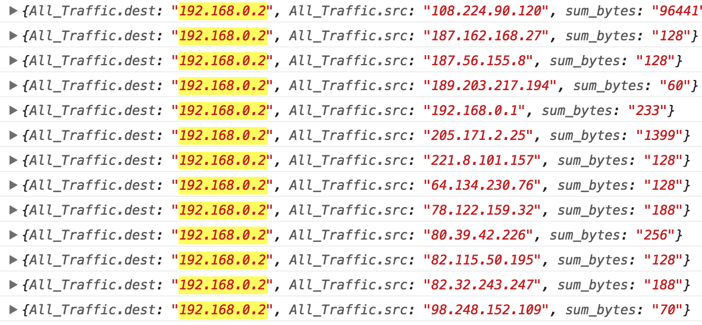

Steps
- Display data in tabular format
- Create pivots that allow user to filter the data down further in multiple ways
- Dump all data on the page
- If the user clicks on an IP provide two options
- filter by dest
- If user filters by src, for example, only show that IP addresses dest data
- 
- filter by src
- When clicked give the user options to filter in atleast two ways
- Traffic to the address
- Traffic from the address
- *These actions should be clear
- When the user hits refresh perserve state(and also know what filter is being
performed)
- Form history/navigation: Basically if I do at least 3 pivots in a row, I should have an easy way to get
back to my initial state
- ✓ Setup Sass for project
- Review JSON data to better understand filter rules
- 192.168.0.2 is a traffice src, but it is also a destination
- Research Pivot tables
- Create pivot table in HTML. Access layout for styling treatments